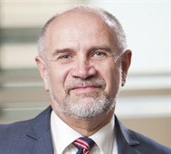

Stephen Ohl
BE (Mech), Grad Dip Man, Cert Sup Man, FAICD, MIE Aust, CP Eng, RPEQ.
Stephen Ohl is a Director and Principal Consultant of Sandjohl Consulting Pty Ltd.
He is now available for Board positions and to consult to Australian and international companies, investment banks and superannuation funds on commercial, regulatory and technical matters in relation to energy infrastructure with an emphasis on oil and gas production, transportation and use. The services can be provided in relation to the purchase, sale and financing of existing energy infrastructure assets as well as the development of new energy infrastructure with unequalled expertise particularly in gas and electricity related infrastructure. Other service areas include strategic planning, business management, project management, gas and electricity market activities including gas contracts, pipeline contracts and business economics including the determination of tariffs and project returns.
Among other qualifications Stephen is a Fellow, Australian Institute of Company Directors and a Member, Institution of Engineers Australia. He is a life member of the Australian Pipeline and Gas Association (APGA) (formerly the Australian Pipeline Industry Association) and in 2014 he received the APGA “Outstanding Contribution to the Australian Pipeline Industry” award.
Stephen became a consultant in July 2013 after leaving the APA Group where he was a key member of the APA Executive team since 2005. Over his time with the APA Group it grew in market capitalisation from $0.5 billion to over $5.0 billion, in size from total assets of $1.9 billion to $7.4 billion, from total revenue of $378 million to $1,502 million and from a total staff of 40 to over 1,400. It became part of the S&P/ASX top 50 index on 22 June 2013.is
Background
After graduating from the University of Queensland as a Bachelor of Engineering (Mechanical) Stephen started work with the Dow Chemical Company (Dow) in Melbourne in 1974. He worked for Dow for 10 years with job assignments in Melbourne, Indonesia, Texas (USA) and South Korea. These job assignments covered a broad range of responsibilities including project management, production, operation, maintenance, product development and business management. They also involved working in a variety of petro-chemical process plants.
Stephen commenced work with The Moonie Oil Company (TMOC) in May 1984 as the field superintendent for Moonie and adjacent oil fields. In November 1985 he moved to Brisbane as the TMOC operations engineer for Queensland.
Following the Australian Gas Light Company’s (AGL) acquisition of the TMOC business in 1987 Stephen progressed through a number of Brisbane based roles. Finally, as Manager Queensland, he led the AGL Queensland business unit with responsibility for all strategic, operational, business development, project, commercial and legislative activities in Queensland.
In early 1998 Stephen moved to Canberra to the dual positions of AGL Manager NSW Pipelines and General Manager, East Australian Pipelines Limited (EAPL) reporting to the EAPL board. EAPL was owned 51% by AGL, 25% by TransCanada Pipelines and 24% by Petronas of Malaysia with annual revenue of $100 million and total assets of $475 million.
AGL divested its EAPL ownership as part of the float of the Australian Pipeline Trust (APT) in June 2000. From 2000 to 2005, Stephen held the AGL positions of Manager PNG Pipeline Project, Project Director for the AGL/Petronas PNG Pipeline Consortium and Agility Client Program Manager Pipelines.
In May 2005 Stephen commenced in the position of General Manager Operations (later becoming the Chief Operating Officer) with the Australian Pipeline Trust reporting to the CEO. In this role he was responsible for the business performance of all the trusts assets including operations, contract management, commercial development and technical regulation.
With the expansion of APT to become the APA Group, in 2008, his role became that of Group Manager Operations reporting to the Managing Director and with responsibility for the development, construction, operation and technical regulation of all APA and third party assets. These operations included over 800 employees and 500 contract staff operating over 12,000 kms of high pressure gas pipelines, gas distribution networks servicing over 1,000,000 end users, gas fired power stations, gas processing and gas storage facilities and high voltage electricity transmission interconnects.
With the further growth of the APA Group, Stephen became the Group Executive Strategic Projects in 2012 which, along with APA Corporate representational responsibilities, included the Project Director roles for APA’s Mondarra Gas Storage facility project ($290 million) and the APA/AGL joint owned Diamantina Power Station project ($663 million).
After leaving the APA Group in mid-2013 he has started his own consulting business trading as Sandjohl Consulting Pty Ltd.
Experience
Since becoming a consultant Stephen has carried out the following work.
- July 2013 to May 2014. Contracted to Diamantina Power Station Pty Ltd as Project Director for the management of the construction of the 240MW Diamantina Power Station, the 60MW Leichhardt Power Stations and related high voltage transmission lines, high voltage switch yard and gas laterals. Total value approximately $600 million (excluding project financing costs).
- July 2013 to current. APIA nominee Director on the Energy Pipelines Cooperative Research Centre Board. Member of the Research Publication and Quality Board committee.
The following is a summary of Stephen’s prior experience across a broad range of areas of practice.
Acquisitions and Mergers - Corporate
- Development of initial and subsequent Bidders Statements for the APA Group off-market bid and acquisition (approx $1,680 million in APA securities plus cash) of Hastings Diversified Utility Fund (December 2011 - December 2012);
- Acquisition and integration into APA Group of 263 staff effective 2 October 2007 following the $210million buy-out of the Alinta operation and maintenance agreement over APA’s pipeline transmission assets (October 2007);
- Competitive tender acquisition ($556.5 million) of the Origin Energy Asset Management business including a 33.3% interest in the SEAGas pipeline, a 17.2% interest in Envestra and the subsequent integration of the business and of 488 staff into APA Group (February - July 2007);
- Takeover acquisition ($452 million) of GasNet and the subsequent integration of the business and staff into APA Group (August – November, 2006); and
- Competitive tender acquisition ($521 million) of the Allgas gas distribution business and the subsequent integration of the business and staff into APA Group (August – November 2006).
Acquisitions - Electrical Infrastructure
- Competitive tender acquisition ($172 million) of Emu Downs (WA) windfarm (June 2011); li Acquisition and integration into APA Group of 263 staff effective 2 October 2007 following the $210million buy-out of the Alinta operation and maintenance agreement over APA’s pipeline transmission assets (October 2007);
- Competitive tender acquisition ($170 million) of the Directlink High Voltage Direct Current Interconnect (November 2006 - February 2007); and
- Competitive tender acquisition ($153 million) of the Murraylink High Voltage Direct Current Interconnect (January - March 2006).
Acquisitions - Oil and Gas Infrastructure
As part of the APA Group Executive team:
- Acquisition ($63 million) of the Amadeus Basin to Darwin gas pipeline (June 2011);
- Competitive tender acquisition ($82.6 million) from AGL of the Berwyndale to Wallumbilla gas pipeline (January - March 2010); and
- Competitive tender acquisition ($23.5 million) of the Central Ranges business including 6 staff, the Central Ranges gas pipeline and the Tamworth gas network (June - August 2008).
As a secondee to APA Group:
- Participate in acquisition due diligence for the unsuccessful bids for the Moomba to Adelaide pipeline, Ballera to Wallumbilla pipeline and the Dampier to Bunbury pipeline (circa 2004).
As secondee to the AGL Corporate Development team:
- Provided expert input on AGL Corporate Development due diligence investigations conducted for various potential acquisitions including the Dampier to Bunbury pipeline, the Moomba to Adelaide pipeline and the Victorian pipeline system.
Business Development – Oil and Gas Infrastructure
As part of the APA Group Executive team:
- Negotiated and agreed with Power and Water Corporation the development of the Bonaparte Gas Pipeline and the associated Gas Transportation Agreement with a value in excess of $400 million (January - June 2006).
As the responsible APA Group Executive (May 2005 to March 2012):
- Development from concept to an operating asset of new facilities including Bonaparte Gas Pipeline ($170 million), Tipton West Coal Seam Gas plant ($31 million), Daandine Power Station ($30 million), Mt Isa X41 Power Station ($30 million), Wickham Point Pipeline ($35 million); and
- Development from concept to operating asset all expansion projects on existing assets including looping, compressor stations, networks and gas storage (average APA Group Capex spend $180 million per year).
As part of the relevant AGL project team;
- With the AGL/Petronas Consortium bid team contributed to being selected as the preferred developer for the $1.5 billion PNG to Queensland gas pipeline (1996 to 1998); and • Through a Queensland Government tender process
- Through a Queensland Government tender process to successfully win the right to develop the new $180 million Carpentaria Gas Pipeline from south-west Queensland to Mt.Isa. Conducted negotiations to finalise this agreement with the Queensland Government. Conducted and supported negotiations with pipeline users for transportation contracts with a total value in excess of $400 million (1994 to 1996).
Business Development - Other
As part of the relevant Dow Chemical business team:
- Worked with marketing department and customers to develop the market for Styrofoam* brand insulation. Designed and conducted long and short term testing in the laboratory and in field trials to support product marketing (1983 to 1984); and
- Member of the South Korean low density polyethylene (LDPE) Product Management Team which planned and co-ordinated research, marketing and production activities for the domestic and export LDPE markets (1981 to 1983).
Business Operations – Oil and Gas
As the responsible APA Group Executive:
- Operation of all APA assets and provision of management, asset development and operation services to third party asset owners including Envestra, Energy Infrastructure Investments, Gorodok Ethane pipeline and others (Total Opex over $300 million per annum and total Capex over $100 million per annum) (May 2005 to March 2012); and
- Continuous improvement and evolution of the APA national operating organisation including integration of all acquisitions (May 2005 to March 2012).
As the responsible AGL Manager:
- Responsible for client relationships, Agility’s profit and Australia wide performance as an asset manager and service provider for high pressure pipelines, principally the APA Group (July 2000 to April 2005);
- Reporting to the EAPL (Moomba to Sydney pipeline system) board and the General Manager AGL Pipelines, lead all aspects of the EAPL pipeline business including developing and expanding new business opportunities. EAPL earned over $100 million revenue per annum with total assets of $475 million. The shareholders were AGL (51%), Transcanada Pipelines (25%) and Petronas (24%) (1998 to 2000);
- Lead all aspects of the existing AGL pipeline business in Queensland (principally the Roma to Brisbane pipeline), identifying, developing and expanding new business opportunities in Queensland and supporting the Sydney based functional areas in their activities across Australia (1993 to 1997);
- Responsible for pipeline operation, maintenance and capital works of the Roma to Brisbane gas pipeline, Moonie to Brisbane crude oil pipeline, Lytton crude oil tank terminal and AGL Petroleums 50% interest in Jackson to Moonie crude oil pipeline (1989 to 1992); and
- Operation and maintenance of Moonie and adjacent oil fields, pipeline terminal and pump station and a remote intermediate pump station. Facilities included submersible, gas lift and beam pump oil production wells, oil water separation, storage tanks, pumping, road tanker loading, electricity generation and related unit operations. Administration and management of the Moonie site included housing and amenities for employees and families (1984 to 1985).
Business Operations - Other
As part of the relevant Dow Chemical team:
- Monitoring day-to-day operation and maintenance of a tubular high pressure low density polyethylene (LDPE) plant at Yeosu and an autoclave high pressure LDPE plant at Ulsan by working with the South Korean plant managers (1981 to 1983);
- In charge of maintenance, operation and modification of finishing section of Texan low density polyethylene (LDPE) plant comprising extrusion, separation, air conveying and silo storage systems. Worked in all other areas of the process as well as managing numerous small projects. Spent a short time in solution process high density polyethylene (HDPE) plant (1979 to 1981); and
- Operation of Indonesian Dowpon* herbicide plant and Dursban* insecticide formulation plant. Plant site included production, warehouse, laboratory, accounting, maintenance, purchasing and personnel functions (1976 to 1979).
Corporate Financing
As part of the APA Group Executive team:
- Development of Prospectus for APA Group Hybrid raising ($515 million) (September 2012);
- Development of Information Memoranda and participation in management presentations for raising of funds by APA including the issue of 10 year fixed rate A$300million medium term notes (MTN) (July 2010);
- Development of Information Memorandum and participation in management presentations to obtain APA’s first credit ratings with Standard & Poor’s (BBB in June 2009) and Moody’s (BAA2 in April 2010);
- Development of US Private Placement Offer Memoranda which resulted in the raising of US$650 million (2007) and US$140 million (2009) in debt with 10, 12 and 15 year tenors;
- Development of Product Disclosure Statement and a $356 million capital raising via a fully underwritten 2 for 7 Renounceable Rights Issue (November – December 2006); and
- $200 million capital raising via an ABNAmro managed 15% book build/placement and a Security Purchase Plan (September 2006).
Divestment – Infrastructure
As part of the APA Group Executive team:
- Development of Information Memorandum for the $477 million sale of 80% of the APA Group owned Gas Distribution business (previously Allgas) into the Gas Distribution Infrastructure entity owned by Marubeni and RREEF (September - December 2011); and
- Formation of unlisted Energy Investment Fund incorporating APA assets and equity partners Marubeni (49.9%), Osaka Gas (30.2%) and APA Group (19.9%) to provide $600 million of equity back to APA and APA to be the manager and operator of the assets (June - November 2008).
As secondee to the AGL Corporate Development team:
- Provided expert input to the AGL Corporate Development information memorandum and data room queries for the sale of EAPL (Moomba to Sydney pipeline system) as part of the June 2000 float of the Australian Pipeline Trust.
Project Director – Electrical Infrastructure
As the responsible APA Group Executive:
- Project Director role, on behalf of Diamantina Power Station Pty Ltd (50% owned by APA and 50% owned by AGL), for the gas fired Diamantina power station (DPS) and Leichhardt power station (LPS) to be constructed at Mt.Isa with an approved December 2012 budget of $663.3 million (including project financing costs). This was set up with a small owners team using KBR to provide Project Management Services and SKM to provide Owners Engineer Services and the 242 MW DPS to be built under a turnkey contract by Forge Power/Seimens and the 60MW LPS to be built under a turnkey contract by Leightons/Rolls Royce (January 2012 to June 2013).
Project Director – Oil and Gas Infrastructure
As the responsible APA Group Executive:
- Project Director role for the APA Mondarra Gas Storage Facility projects using a hybrid EPCM model. The original February 2011 budget was $171.8 million. This escalated due to scope, schedule and cost increases to a final July 2012 approved budget of $290 million. The hybrid EPCM model used an integrated APA Engineering and Worley Parsons team for the detailed engineering and procurement and, after selected the construction contractor via a tender process, an integrated APA and Enerflex construction management team with the bulk of the construction being carried out by Enerflex (July 2011 to June 2013); and
- Project Director role for the Bonaparte Gas Pipeline project ($170 million) constructed using an Early Contractor Involvement (ECI) model with a small APA Group project team and AJ Lucas as the constructor. (January 2007 to December 2009).
As the responsible AGL Manager:
- Project Director for the AGL/Petronas PNG Pipeline Consortium and working with the project team to develop strategies for and conduct discussions and negotiations with the PNG Producers, the Queensland Government and Federal Government entities to progress the commercial, regulatory and technical activities needed to develop the project. Project did not proceed (2000 to 2005).
Project Financing
As part of the APA Group Executive team:
- Raising of Project Finance ($599 million for construction reducing to $497 million for operation) for the Diamantina Power Station (Qld) (September to December 2012).
As the APA Group representative on the SEA Gas Partnership Committee:
- Participation in the refinancing of the SEA Gas pipeline $425 million project finance facility (2009).
Regulatory – Gas Infrastructure
As part of the APA Group Executive team:
- Participated in Access Arrangement development for all APA Groups regulated pipeline assets (May 2005 to March 2012).
As the responsible AGL Manager:
- Provided input to and monitored the impact on EAPL (Moomba to Sydney pipeline system) of the ACCC consideration of EAPL’s first Access Arrangement submission. Represented EAPL in activities involving the ACCC, NCC, Federal, NSW and ACT Governments. Negotiated agreements for the EAPL interface with the Victorian market system operator, Vencorp, and the EAPL component of the $72 million capital program by Transmission Pipelines Australia for emergency gas supplies to Victoria following the Longford explosion (1998 to 2000); and
- Actively involved with relevant industry groups and directly with Government departments in consultation to develop new legislation and amend existing legislation. Provided industry input, through the APIA and AGL, into the development and implementation of the “National Third party Access Code for Natural Gas Pipeline Systems” (1993 to 1997).
International and Representational Experience
In addition to the above areas of practice, Mr Ohl has international and representational experience as shown below.
International
While seconded to the APA Group:
- Member of a joint bid team with a major Canadian Oil and Gas pipeline company to conduct due diligence, negotiate agreements and bid (unsuccessfully) for Australian pipeline assets (2004).
In his time with Dow Chemical Mr Ohl worked in:
- South Korea (1981 to 1983) based at Yeosu providing technical, operation and maintenance advice to the 50% Dow owned, Korean operated low density polyethylene (LDPE) plants at Yeosu and Ulsan and also advice on the types of products to be manufactured;
- USA (1979 to 1981) at the Dow Chemical Freeport Texas facility essentially as a training assignment working in tubular and autoclave high pressure low density polyethylene (LDPE) plants and gaining some understanding of LDPE properties and uses prior to moving to South Korea; and
- Indonesia (1976 to 1979) based in Medan, North Sumatra where he had a basic proficiency in Indonesian and ran the 100% owned Dow Chemical Dowpon* herbicide plant and Dursban* insecticide formulation plant and had to work with local government and business practices within Dow’s strict ethical practices.
Joint Ventures/ Partnerships
Representing both AGL and the APA Group:
- As the Project Director for the jointly (50% AGL and 50% APA Group) developed Diamantina Power Station at Mt.Isa (2012 to 2013).
The APA Group representative for;
- The Goldfields Gas Pipeline joint venture (88% APA Group and 12% Alinta Energy) (2005 to 2013); and
- The SEA Gas Partnership (50% APA Group and 50% REST) (2007 to 2013).
The AGL representative for;
- The Roma Brisbane Pipeline joint venture (85% AGL and 15% Interstate Pipelines) (1993 to 1998); and
- The Jackson Moonie Pipeline joint venture (50% AGL and 50% Santos) (1989 to 1992).
Directorships
- One of 8 directors on the board of Energy Pipelines CRC Ltd (2011 to 2013);
- APA nominee director (with one other REST nominee director) on the boards of South East Australia Gas Pty Ltd, ANP SEAGas SPV2 Pty Ltd and ANP SEAGas SPV3 Pty Ltd (2007 to 2013);
- APA nominee director (with members of the APA Group Executive Team) of wholly owned APA subsidiary companies (2005 to 2013); and
- Employee representative director of AGL Superannuation and Benefits Pty Ltd (1994).
Industry Representation
Over his working life Mr Ohl has held a number of industry representation positions including:
- Chairman of the Australian Pipeline Industry Association (APIA) Research and Standards Committee (RSC) including hosting the 2013 Joint Technical Meeting conference in Sydney with the USA based Pipeline Research Council International (PRCI) and European Pipeline Research Group (EPRG) (2011 to 2013);
- Member APIA Management Committee (1993 to 1996) including a one year term as President (1995);
- Member, Australian Gas Association (1994 - 2000); and
- Member of the Australian Pipeline Operators Group (1985 to 1991) including a two year term as Chairman (1989 - 1991).